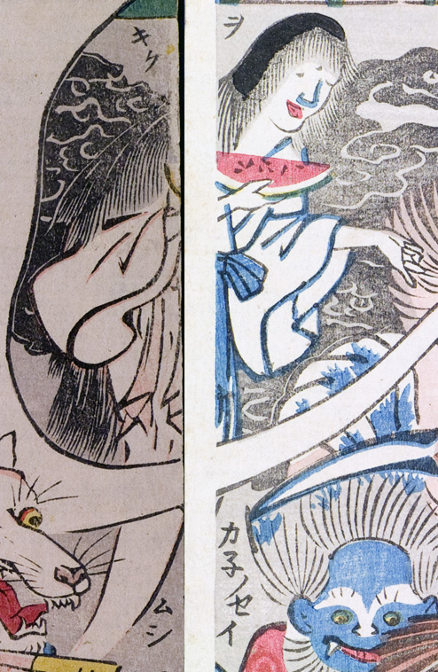

お菊；オキク，お菊虫；オキクムシ，幽霊；ユウレイ，スイカ；スイカ，女；オンナ

白い着物姿の女の幽霊。手には半月状に切ったスイカを持っている。
著作者：玉園／出典：親書誌：U426_nichibunken_0145：画本西遊記百鬼夜行ノ圖；エホンサイユウキヒャッキヤギョウノズ／日付：2009／資源識別子：U426_nichibunken_0145_0002_0000
Copyright (c)2010- International Research Center for Japanese Studies, Kyoto, Japan. All rights reserved.